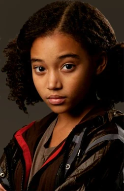

Mockingjay - Part 1
Figuren
-
Katniss Everdeen
Die sechzehnjährige Katniss lebt mit ihrer Mutter und ihrer jüngeren Schwester Primrose in Distrikt 12, einem der ärmsten Bezirke von Panem, der für den Abbau von Kohle für das Kapitol zuständig ist. Sie ist die Tochter einer Heilerin und eines Kohlearbeiters, der fünf Jahre vor dem Beginn der Haupthandlung bei einer Explosion im Bergwerk starb. Ihre Mutter wurde durch dieses Ereignis depressiv, und Katniss ernährt die Familie, indem sie verbotenerweise außerhalb des Zauns um Distrikt 12 in den Wäldern jagt. Ihre Jagdausflüge unternimmt sie gemeinsam mit dem zwei Jahre älteren Gale Hawthorne, dessen Vater bei demselben Unglück starb wie Katniss'. Katniss meldet sich anstelle ihrer Schwester freiwillig für die Teilnahme an den 74. Hungerspielen und reist gemeinsam mit dem männlichen Tribut Peeta Mellark ins Kapitol. Sie wird zum Publikumsliebling der Spiele, da sie durch ihren Stylisten Cinna als „das Mädchen, das in Flammen steht“ bekannt wird. Nach dem öffentlichen Liebesbekenntnis von Peetas an Katniss, das diese zunächst für einen Versuch der Sponsorengewinnung hält, werden die beiden als tragisches Liebespaar gefeiert, das seine Liebe nicht wird leben können. Während der Spiele freundet sich Katniss mit der 12-jährigen Rue an, dem weiblichen Tribut aus Distrikt 11. Als Rue getötet wird, trauert sie offen um das Mädchen und erweist diesem in einer nie dagewesenen, öffentlich übertragenen Abschiedsszene ihren letzten Respekt. Um die Geschichte vom tragischen Liebespaar weiter anzuheizen, verkünden die Spielmacher eine Regeländerung: Während bisher immer nur ein Tribut gewinnen konnte, soll es diesmal ein Siegerpaar geben können, wenn beide Tribute aus einem Distrikt stammen. Daraufhin schließen sich Katniss und Peeta zusammen und kommen einander näher. Als nur noch die beiden am Leben sind, nehmen die Spielmacher jedoch ihre Regeländerung zurück. Da weder Katniss noch Peeta bereit sind, einander zu töten, kündigen sie auf Katniss’ Initiative hin öffentlich einen Doppelselbstmord durch Gift an. Im letzten Moment verhindert das Kapitol, das unbedingt einen Sieger braucht, die Selbsttötung und erklärt beide zu Siegern. Mit dieser in ganz Panem im Fernsehen ausgestrahlten Aktion zieht sich Katniss den Zorn von Präsident Snow zu, der darin einen öffentlichen Akt des Widerstands sieht. Am Ende gesteht Katniss Peeta, sie habe ihre Zuneigung in der Arena nur vorgetäuscht, um die Sympathie des Publikums zu erhalten, woraufhin Peeta sich verletzt von ihr distanziert.
-
Peeta Mellark
Peeta wird zum ersten Mal bei der Ernte der 74. Hungerspiele vorgestellt, als er als männlicher Tribut ausgewählt wird, der Distrikt 12 neben dem weiblichen Tribut Katniss Everdeen vertritt. Vor der Ernte hatten Katniss und Peeta nur ein einziges Mal miteinander zu tun gehabt: im Alter von elf Jahren, als Peeta absichtlich zwei Brote in der Bäckerei seiner Familie verbrannte und Prügel von seiner misshandelnden Mutter einsteckte, um die hungernde Katniss zu ernähren. Katniss war ihm für diese Freundlichkeit immer zu Dank verpflichtet, brachte aber nie den Mut auf, ihm zu danken. Oft starrte er sie in der Schule an. Manchmal nahm Katniss Blickkontakt mit ihm auf, aber dann huschten seine Augen schnell weg. In einem Interview mit Caesar Flickerman vor den Spielen gibt Peeta im nationalen Fernsehen zu, dass er seit langem in Katniss verliebt ist. Sie nimmt an, dass dies nur ein Teil seiner Strategie ist, um die Gunst der reichen Sponsoren aus dem Kapitol zu gewinnen. In der Arena verbündet sich Peeta mit den "Karriere"-Tributen (aus den Distrikten 1, 2 und 4) und gaukelt ihnen vor, er würde sie zu Katniss führen. Nachdem Katniss jedoch einen Schwarm Tracker Jackers auf ihre Verfolger gehetzt hat, wird sie selbst von dem Gift der Insekten gestochen, wodurch sie verwirrt und verwundbar wird. Peeta drängt Katniss, zu fliehen, und bleibt zurück, um gegen den Tributkollegen Cato zu kämpfen, während sie flieht. Er überlebt die Begegnung mit Cato, erleidet aber eine Stichwunde am Bein. Er tarnt sich in den Felsen und im Schlamm am Flussufer und stirbt langsam an einer Blutvergiftung, bis Katniss ihn Tage später findet. Foll.
-
Gale Hawthorne
Gale wurde zum ersten Mal in Tödliche Spiele eingeführt, als er in den Wald ging und mit Katniss einen Laib Brot teilte, den er durch einen Handel mit Mr. Mellark bekommen hatte. Die beiden sprechen über die Hungerspiele und die bevorstehende Ernte, während sie das Brot und Ziegenkäse in dem Wald essen. Gale erzählt später, dass er und Katniss fliehen könnten und die Ernte damit vermeiden, aber sie sind sich einig, dass sie nicht gehen können wegen ihren Familien. Katniss erklärt, dass Gale schon immer wütend auf das Kapitol war und dass er oft seine Wut auslässt, wenn er alleine mit ihr im Wald ist. Gale erwähnt auch, dass er später gerne Kinder haben möchte, sofern er besser für sie sorgen kann und sie nicht hungern müssen. Bei der Ernte gibt Gale Katniss ein eindringliches Lächeln, da die Chancen mit 42 Losen nicht zu seinem Gunsten stehen. Als Katniss freiwillig Prims Platz in den Hungerspielen übernimmt, hält er Prim von Katniss zurück, als sie zur Bühne vorgeht. In dem Justiz-Gebäude betritt er den Raum und Gale erzählt Katniss, dass sie stärker als die Anderen sei und sie die Spiele gewinnen könnte. Gale rät ihr, sich einen Bogen zu machen, wenn es nicht einen im Füllhorn gäbe. Er verspricht ihr, so lange sie weg ist, sich um Prim zu kümmern. Als Friedenswächter ihn aus dem Zimmer ziehen, schreit Gale noch: "Katniss, denk dran, ich ..." Katniss fand nie heraus, woran er sie erinnern wollte. Nachdem Katniss weg ist, übernimmt Gale alle Aufgaben, die sie in der Regel erfüllt, um ihre Familie zu unterstützen. Er jagt für Prim und ihre Mutter Mahlzeiten und sammelt die Lieferungen für ihre Mutter aus der Apotheke. Gale beobachtet die Spiele im Fernsehen, zu Hause und in der Schule, wie es erforderlich ist, und leidet sehr, Katniss in Gefahr zu sehen. Er erwähnt später, dass er einen Großteil der Spiele zusammen mit Prim und Mrs. Everdeen angeschaut hatte. In der Arena erkennt Katniss, dass es zu ihrem Vorteil ist, die Liebe zu Peeta vorzuspielen, aber sie fühlt sich schuldig, weil sie über ihre Gefühle für Gale verwirrt ist. Später wird klar gestellt, dass es für Gale sehr schmerzhaft war, zu sehen, wie Katniss die gespielte Romanze mit Peeta vorzeigte, obwohl er wusste, dass es nur gespielt war.
-
Primrose Everdeen
Die Zwölfjährige lebt mit ihrer Mutter und Schwester in einem kleinen Haus am Rand von Distrikt 12 im Saum. Bei ihrer ersten Ernte hat sie nur ein einziges Los unter Tausenden, da Katniss es nie zulassen würde, dass Prim Tesserasteine nimmt. Sie trägt Katniss erstes Erntekleid, einen Rock mit Rüschenbluse. Mrs. Everdeen steckte die Bluse mit Nadeln fest, doch trotzdem rutschte die Bluse immer wieder aus dem Rock, sodass es aussah, als hätte Prim einen Entenschwanz. Deshalb nennt Katniss sie auch Entchen.
-
Haymitch Abernathy
Haymitch ist nun 40 Jahre alt und der einzige noch lebende Sieger aus Distrikt 12, sowie Mentor der Tribute aus 12. Als sich Katniss freiwillig für Prim, ihre Schwester, meldet, ist er sich zwar noch sicher sie sterben zu sehen, das ändert sich jedoch schon bald, als Katniss ihn mit einem Messer angreift. Als diese ihn nach einem Tipp für die Arena fragt, ist Haymitch natürlich wieder betrunken und antwortet ihr, sie solle am Leben bleiben. Daraufhin treffen er, Katniss und Peeta die Abmachung, dass er nicht trinkt, während er als ihr Mentor fungiert. Ein Versprechen, das er auch noch einhält, während die beiden das zweite Mal in der Arena sind. Er schickt Katniss während den Spielen immer wieder Geschenke, in denen geheime Botschaften vorhanden sind, da sie die Einzige zu sein scheint, die versteht, was er mit seinen Sponsoren-Geschenken sagen möchte. Zum Beispiel schickt er ihr Suppe, nachdem sie Peeta küsst. Im Film ist diesem Geschenk noch ein Zettel mit der Aufschrift: "Das nennst du einen Kuss? - H" beigelegt.
-
Rue
Katniss sieht Rue zum ersten Mal, als sie sich die Wiederholung der Ernte ansieht. Der Anblick der 12-jährigen erinnert sie etwas an einen Vogel (Spotttölpel). Schon hier fällt ihr eine große Ähnlichkeit mit ihrer Schwester Prim auf, obwohl Rue dunkelhaarig und dunkelhäutig ist. Beide Mädchen wirken lieblich, verletzbar und lösen in Katniss einen Beschützerinstinkt aus. Aber anders als bei Prim meldet sich für Rue keiner freiwillig. Wegen ihrer zarten, freundlichen und letztendlich auch mutigen Art schließen viele Fans sie schnell ins Herz. Rue with Cato's knife (2) Rue hat Catos Messer geklaut. Im Trainingscenter zeigt sie ihr geschicktes Können mit der Schleuder und beobachtet Katniss im Film unbemerkt, bis Peeta sie darauf aufmerksam macht
-
Cinna
Wie es bei den meisten neuen Stylisten ist, wird Cinna Distrikt 12 zugewiesen, aber nicht aus dem üblichen Grund, den neuen Stylisten den unbeliebtesten Distrikt zuzuteilen, sondern weil er aus unbekannten Gründen selber darum gebeten hat. Nachdem Katniss' Vorbereitungsteam ihr Aussehen von oben bis unten verändert hat, kommt Cinna herein, der Katniss aufgrund seines normalen Looks außer einem Hauch von goldenem Eyeliner überrascht, da Schlichtheit ungewöhnlich für Bürger des Kapitols ist. Cinna betrachtet Katniss eine Weile, und überlegt sich ein passendes Outfit für die Eröffnungsfeier. Er designet ihr einen kohlfarbenen Overall, der mit dem Outfit des anderen Distrikt 12 Tributs, Peeta Mellark, übereinstimmt. Cinna geht mit ihnen zu den Streitwagen, um ihre Umhänge mit künstlichem Feuer in Brand zu setzen. Er beweist sein Talent, indem er das Kapitol-Publikum mit seinen ungewöhnlichen und atemberaubenden Outfits im Verlauf der Vorbereitungen für die Spiele überrascht. Er ist es, der Katniss ursprünglich ihren Spitznamen "das Mädchen, das in Flammen stand" gab. Nach der Eröffnungsfeier feiert Cinna mit Katniss, Peeta, Portia, Haymitch und Effie. Anschließend unterhält er sich mit den Erwachsenen darüber, was als nächstes ansteht. Er bereitet Katniss' Kleid für ihr Interview mit Caesar Flickerman vor. Er behält Katniss’ Image als "Mädchen in Flammen" bei und entwirft ein Kleid aus kostbaren Edelsteinen in Flammen-Farben. Diese reflektieren das Licht und machen den Eindruck, als wäre Katniss von Flammen umschlungen. Katniss erzählt ihm von ihrem Problem, die Leute für sich zu gewinnen. Daraufhin macht Cinna ihr Mut und rät ihr, ihn im Publikum zu suchen und sich vorzustellen, sie würde nur mit Ihm reden. Katniss gelingt es auf diese Weise, das Interview gut zu überstehen.
-
Effie Trinket
Einige Jahre vor dem Beginn von Tödliche Spiele wurde Effie zur Betreuerin von Distrikt 12 ernannt. Jedoch weiß jeder, dass Effie nur darauf hofft, es eines Tages in einen besseren Distrikt zu schaffen, da Effie es liebt im Mittelpunkt zu stehen. Am Ende von Flammender Zorn wird Effie von Haymitch und Plutarch nach Distrikt 13 zu den Rebellen gebracht. Es wird vermutet, dass Effie ebenfalls unter ständiger Angst gelitten hatte, dass sie etwas hätte falsch machen können, wofür sie dann vom Kapitol bestraft werden würde. Dies konnte sie aber niemals öffentlich zeigen.
-
Präsident Coriolanus Snow
Präsident Snow war das Oberhaupt von Panem. Dank ihm war das Kapitol wohlhabend und sicher, jedoch nur bis zur 2. Rebellion. Er wachte über alle Distrikte und herrschte mit sehr harter Hand. Traditionell hielt er während der Eröffnungsfeier eine kurze Begrüßungsrede, die weitere Organisation überließ er jedoch dem Obersten Spielmacher, Claudius Templesmith und Caesar Flickerman, den Moderatoren. Doch auch wenn Präsident Snow im Hintergrund blieb, heißt das nicht, dass er sich eine Minute der Spiele entgehen ließ: Für ihn sind die Spiele das Herz von Panem.
-
Präsidentin Alma Coin
Die Präsidentin kann Katniss von Anfang an nicht ausstehen, da sie der Meinung ist, dass sie lieber Peeta aus der Arena hätten retten sollen. Er würde den "Spotttölpel" eher für die Rebellen spielen als Katniss, die anfangs noch Zweifel hegt und ihre Rolle an Bedingungen knüpft. Als diese ihr droht, den Rebellen so nicht zu helfen, wenn sie Peeta, Johanna, Annie Cresta und Enobaria nicht Straffreiheit garantiert, muss Coin notgedrungen einwilligen und ihre Entscheidung vor ihrem kompletten Distrikt verkünden. Im Laufe der Geschichte kommt heraus, das Coin Katniss nicht nur nicht mag, sondern dass es ihr lieber wäre, wenn sie tot wäre, aus Angst sie könne ihr in ihrem Dasein als Spotttölpel später den Platz als Präsidentin streitig machen. Bei der Falschmeldung von Katniss Tod hält sie eine Rede in der sie erklärt das Katniss Everdeen für immer das Gesicht der Revolution wäre. Nachdem Snow gestürzt wurde, wird sie zur neuen Präsidentin von Panem ernannt. Eine ihrer ersten Amtshandlungen war, "neue Hungerspiele" für die Kapitol-Kinder einzuführen - so soll gleiches mit gleichem vergolten werden.